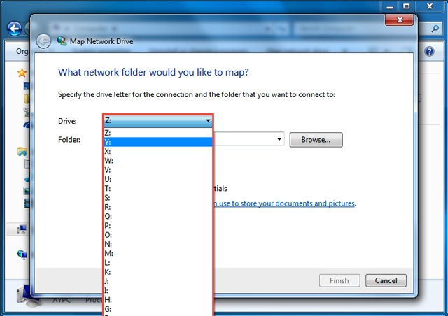

Overview
Synology NAS is designed to make storing and sharing files within your local network quick and simple, allowing you to directly access shared folders and files on the Synology NAS without going through the hassle of logging into DSM everytime. For example, you'll be able to store files to your Synology NAS with Windows Explorer just like other network devices.
Map with Windows Explorer
- Open a Windows Explorer window and go to Computer.
- Click Map network drive. This action makes the Map Network Drive window appear.
- On the Map Network Drive window, choose a drive letter from the Drive drop-down menu. 
- In the Folder field, enter the server name of your Synology NAS and shared folder name preceded and separated by backslashes. For example, if the server name of your Synology NAS is "DiskStation," and the name of your shared folder is "Share1," then you should enter "\\DiskStation\Share1." Click Finish when ready.
- Enter your DSM username and password.
- Finally, a Windows Explorer window appears. Your shared folder will now be mapped and accessible under Computer.


Can't Access the Shared Folder? The user account you enter here must have access privileges for the shared folder you wish to access.